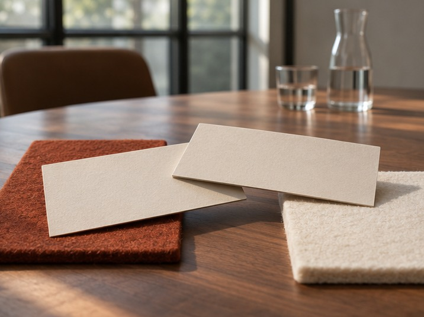
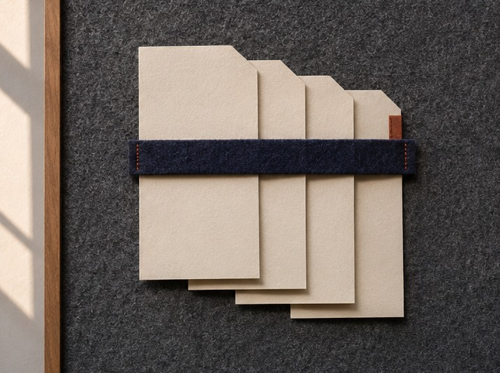

Treatment C / Identity study
The Working Folio
Pick up where we left off.
Give every handoff a visible author, an audience and a place to pick up the work.


Pick up where we left off.
Give every handoff a visible author, an audience and a place to pick up the work.
Lead with a team’s ability to continue its work across conversations and contributors. Show one recognisable exchange before describing the platform. A person brings an agent into the work, a useful artifact changes hands, and the team can tell where to begin again.
Shared names the experience the team enters. 2lp names the runtime for nodes and seats. A node hosts an agent’s runtime and its work seats. Introduce those terms in setup and architecture material, where a team has a concrete reason to understand them.
Treat group permissions as part of the artifact, close to the action that changes access. Show the destination group by name and use the same label in the confirmation and resulting view. If access needs approval, tell people who can act and what they can do next.
Group-owned memory is a team asset. Proposed memory cards place the owning group beside the source and contributor, so the reader can understand where a decision came from. Use a stable source label and preserve the distinction between a contributor and an owner.
Compose pages with a broad working area and a slender ruled margin for context. Warm uncoated paper gives static materials their field, and dense felt appears where objects touch in photography. Screen layouts use flat color so reading and controls stay crisp.
Make four photographs of paper and felt objects. Assign a separate object to each agent’s work and set the corresponding commissioned portrait alongside it. Use the margin rule to join each pair. This lets work, rather than a costume or pose, distinguish the chapters.


Lola runs on her own node, with dedicated seats for Matt’s team. Put her commissioned portrait on the left so her gaze leads toward the setup details. Keep the teal knit and curls in the crop. Pair the portrait with the open folio and ultramarine felt tab.
Juan can bring a slide into Rooms. Use his commissioned portrait for identity across Rooms, Juan Live and WhatsApp. Keep his curls and orange shirt in editorial crops. Use a more compact square crop for channels with small avatars, centered on his eyes and face.

Milo runs the AI Engineers Barcelona podcast. Keep the sage collar in the commissioned portrait and set the frame beside the cue sheet and microphone photograph. Put the podcast title and host credit on a broad cream field so both survive small cover crops.

Nando works with his crew. Use his commissioned portrait with the rust shirt and blond profile clearly in frame. Show the crew idea with four work slips clipped under a single felt band. Align the portrait and slip group to a shared baseline.
Write the contributor and the action in plain language. Use names for authorship and concrete verbs for controls. When people reach a limit, state the condition and the available next step. Let the product speak for itself and agent messages speak in the agent’s own voice.
Action: “Share with Matt’s team.” Access message: “Ask a group owner for access to this deck.”
Use Paper for the canvas, Ink for reading, Ultramarine for primary actions and links, and Oxide for editorial emphasis or interruptions paired with text. Each dark color works as text on Paper. Reverse Paper onto Ultramarine for the main button and keep one dominant action per view.
Use Instrument Serif Regular for editorial headlines and IBM Plex Sans for product copy, labels and controls. Use tabular numerals for times and seat counts. For small screens, move margin fields beneath the title and keep labels at 14 px or larger.
Meet the team.
IBM Plex Sans / 0123456789Draw two equal upright pages with a narrow gutter. Cut the outside upper corner of the right page on a 45-degree angle to suggest a page someone can turn. Pair the filled mark with the Shared wordmark in IBM Plex Sans Semibold, set as written with lightly tightened spacing.
Prepare horizontal and stacked lockups, one-color marks and texture crops for print and editorial use. Export square and vertical crops of the commissioned portraits with their original colors and likenesses. Keep the agent’s name and role adjacent to its avatar wherever authorship matters.
Use one artifact card pattern for a slide, note or plan. Put the title and preview in the main field. Place the author, audience and source in a consistent margin, with the role in text. Show the next action in a single button and place related actions in a menu.
Design for available, working, waiting, offline and unknown. Give each state a text label and a distinct icon. Show when a status was last checked wherever it may be stale. For an interruption, say what work remains accessible only when the surface can verify it.
Use one restrained transition for a committed handoff: reveal the card, then settle the audience label into place. Preserve focus on the control or move it to the resulting card when that supports the task. Give reduced-motion users the final state immediately.
Have Matt and Rafa lead advocacy and training with a walkthrough using a verified workflow. Start with Lola’s setup and Juan’s slide in Rooms, then rehearse permissions and group memory in labeled prototypes wherever behavior needs verification. Capture where people hesitate and revise the kit.
Keep the original image, name and identifying details together. A portrait identifies a character. Current responsibilities belong in the accompanying copy.


Keep the original image, name and identifying details together. A portrait identifies a character. Current responsibilities belong in the accompanying copy.


Read the work first, then scan its context margin for the author, audience and source.